_Logos
Conocé algunos de los logotipos diseñados recientemente para diferentes proyectos.
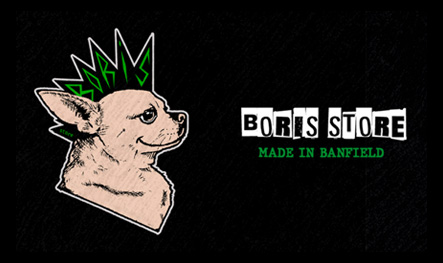
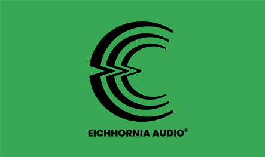
_Textiles
Parte de mi trabajo, desde 2018, es diseñar y estampar prendas con varias técnicas como serigrafía y sublimación para negocios y emprendimientos, especialmente para Boris Store.
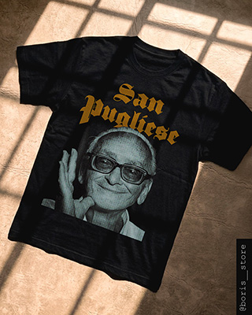
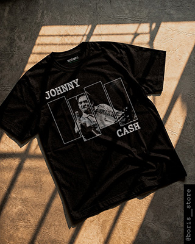
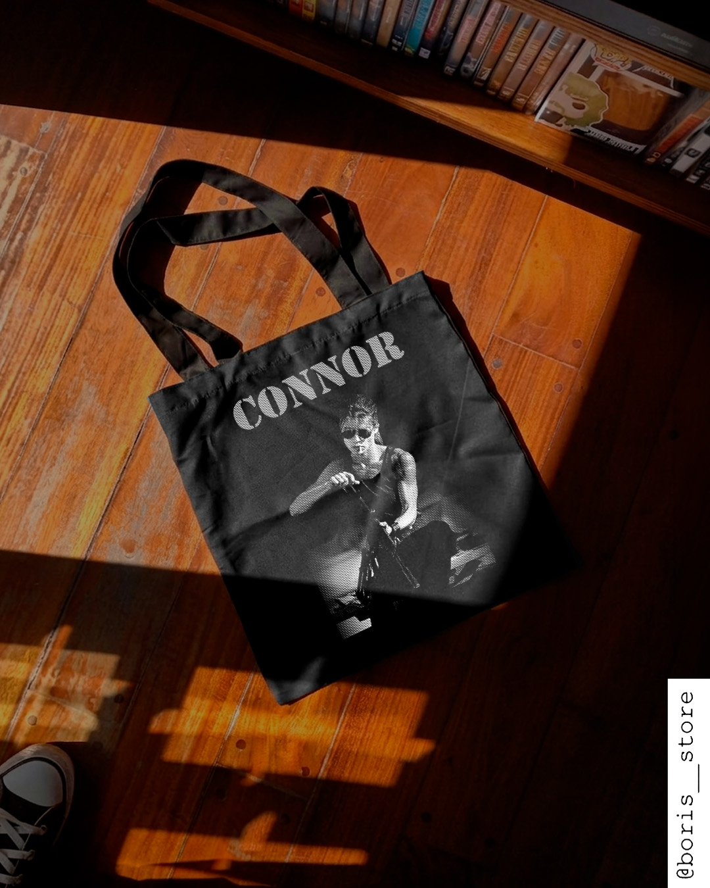
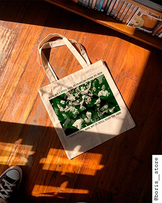
_Prensa y redes
En este apartado podés encontrar piezas de diseño editorial para prensa y también para redes sociales como Instagram y YouTube.
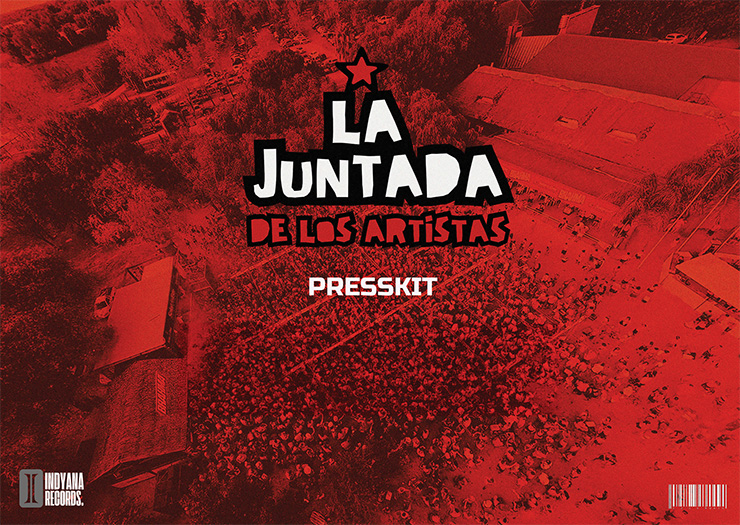
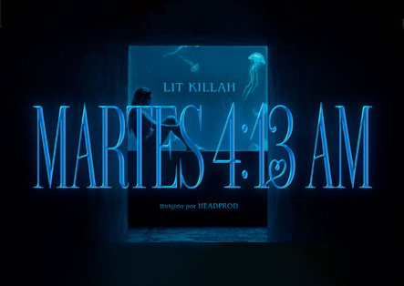
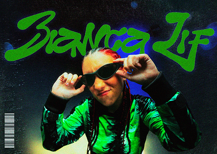
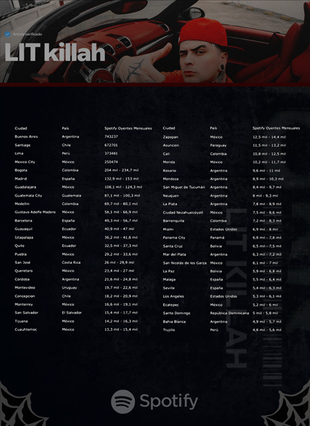
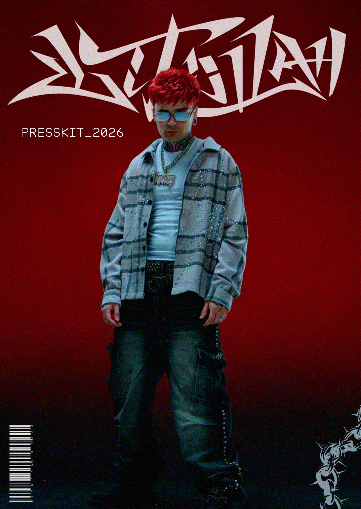
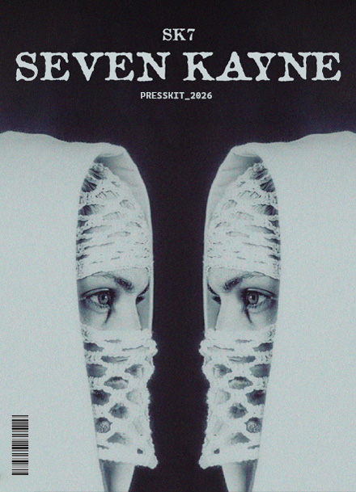
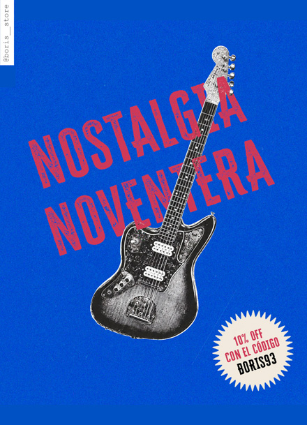
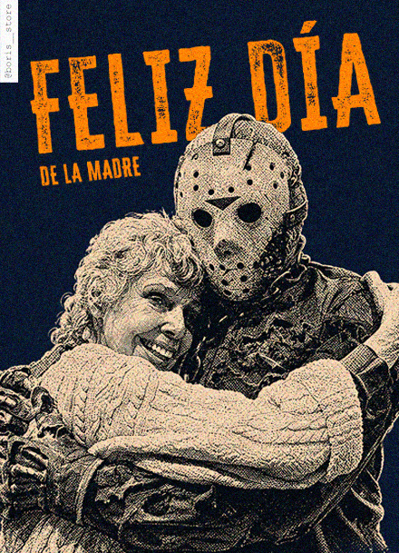
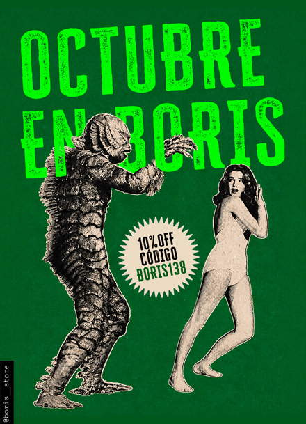